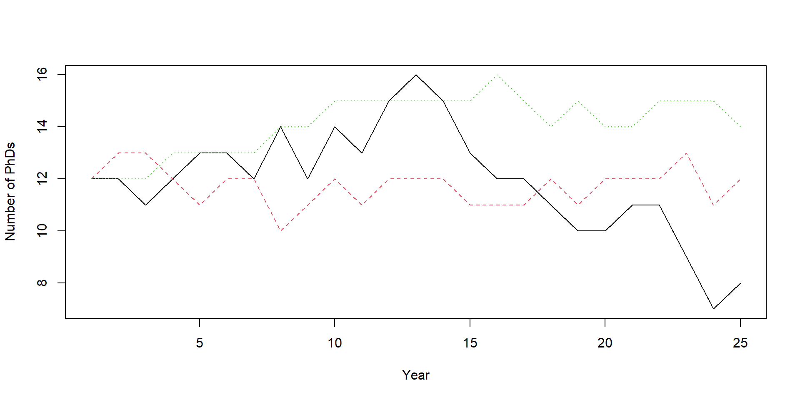

[1] 2 16Simulations in R
Power analysis through simulation in R
Niklas Johannes
Takeaways
- Understand why simulations are useful
- Logic of Monte Carlo Simulations
- Basic tools
Why should I simulate
- Cooking vs. eating
- Makes you truly understand what you’re doing
- Forces you to put a number on things
- Simulate the data generating process (we’ll get back to that)
Going through the motions
- You’ll often find that you don’t know nearly enough for a prediction–or even a study
- If we can’t generate the pattern we’re interested in how can we explain a pattern?
- I take a proper description over a flawed confirmation
Technicalities
Above all, you want to be able to reproduce your analysis–much later, on a different computer, etc. (Trisovic et al. 2022)

Computational reproducibility
For now
set.seed(): Reproduce random numbers within same scriptsessionInfo(): Prints computational environment- Relative paths (here package)
- Explicit caching or markdown
Monte Carlo simulations
Monte Carlo methods, or Monte Carlo experiments, are a broad class of computational algorithms that rely on repeated random sampling to obtain numerical results. The underlying concept is to use randomness to solve problems that might be deterministic in principle. Wikipedia

In plain English
- Define relevant outcome, the process leading to outcome, and potential inputs that go into the process
- Then decide what inputs you want to vary
- Run the process many, many times, with different inputs, summarize and plot the outcomes
A simple example
Totally unrelated to why you are here:
- Outcome: How much power do I have?
- Process: The statistical test I plan to do
- Inputs: Effect size, sample size, \(\alpha\)
Some basic commands first
Sampling a certain number of elements from a set.
Sampling
With or without replacement?
On those letters
R has some neat built-in stuff.
Sampling
Using those letters.
Sampling
Assigning different probabilities.
Remember seeds?
How do we generate randomness?
Built-in R functions that create a random number following a process with a given probability distribution.
rnorm: Normal distributionrbinom: Binomial distributionrpois: Poissong distributionrunif: Uniform distribution
Normal distribution
Draw n numbers from a normal distribution.
Once more: seed
R uses vectors
Gives us 4 draws total: 1 draw from a normal distribution with mean = 0 and sd = 1, 1 draw from a normal distribution with mean = 10 and sd = 50, and so on.
What would I use this for?
Simulating different groups.
What would I use this for?
Simulating different groups.
What would I use this for?
Simulating a correlation.
What would I use this for?
Call:
lm(formula = treatment ~ control)
Residuals:
Min 1Q Median 3Q Max
-42.531 -9.904 -0.444 10.315 53.874
Coefficients:
Estimate Std. Error t value Pr(>|t|)
(Intercept) 100.71554 3.15133 31.96 <2e-16 ***
control 0.49205 0.03129 15.72 <2e-16 ***
---
Signif. codes: 0 '***' 0.001 '**' 0.01 '*' 0.05 '.' 0.1 ' ' 1
Residual standard error: 14.86 on 998 degrees of freedom
Multiple R-squared: 0.1985, Adjusted R-squared: 0.1977
F-statistic: 247.2 on 1 and 998 DF, p-value: < 2.2e-16Uniform distribution
Draw n numbers from a uniform distribution.
Let’s inspect that

What would I use this for?
Keeping a range on predictor variables.
What would I use this for?
Keeping a range on predictor variables.
Call:
lm(formula = y ~ age)
Residuals:
Min 1Q Median 3Q Max
-3.0665 -0.6815 -0.0112 0.6320 3.4804
Coefficients:
Estimate Std. Error t value Pr(>|t|)
(Intercept) -0.026915 0.082359 -0.327 0.744
age 0.499389 0.001297 384.986 <2e-16 ***
---
Signif. codes: 0 '***' 0.001 '**' 0.01 '*' 0.05 '.' 0.1 ' ' 1
Residual standard error: 0.9858 on 998 degrees of freedom
Multiple R-squared: 0.9933, Adjusted R-squared: 0.9933
F-statistic: 1.482e+05 on 1 and 998 DF, p-value: < 2.2e-16Binomial distribution
Let’s flip a coin 100 times. That’s one “experiment”. How often will I get heads?
Many experiments
Let’s run 1000 experiments where we flip a coin 100 times each.
Always inspect and summarize
Makes sense.

What would I use this for?
Compare groups on their probabilities.
What would I use this for?
Compare groups on their probabilities.
What would I use this for?
Bernoulli trials.
What would I use this for?
Bernoulli trials and logistic regression: Does age predict our binary outcome? (Explanation here.)
What would I use this for?
Call:
glm(formula = y ~ age, family = binomial())
Deviance Residuals:
Min 1Q Median 3Q Max
-3.6531 0.0002 0.0011 0.0047 1.0001
Coefficients:
Estimate Std. Error z value Pr(>|z|)
(Intercept) 0.13900 0.56322 0.247 0.805
age 0.28512 0.04927 5.787 7.18e-09 ***
---
Signif. codes: 0 '***' 0.001 '**' 0.01 '*' 0.05 '.' 0.1 ' ' 1
(Dispersion parameter for binomial family taken to be 1)
Null deviance: 171.86 on 9999 degrees of freedom
Residual deviance: 66.03 on 9998 degrees of freedom
AIC: 70.03
Number of Fisher Scoring iterations: 13Poisson distribution
Let’s see how many emails we get in an hour. We check for 10 different hours.
Let’s visualize
Why would you use this?
Compare two groups on how many emails they get.
What would I use this for?
Poisson regression. (More on rep in a moment.)
What would I use this for?
Call:
glm(formula = emails ~ group, family = poisson(), data = d)
Deviance Residuals:
Min 1Q Median 3Q Max
-3.6837 -0.6850 -0.0559 0.5814 2.9916
Coefficients:
Estimate Std. Error z value Pr(>|z|)
(Intercept) 1.63433 0.01397 117.01 <2e-16 ***
groupIT 0.67791 0.01715 39.53 <2e-16 ***
---
Signif. codes: 0 '***' 0.001 '**' 0.01 '*' 0.05 '.' 0.1 ' ' 1
(Dispersion parameter for poisson family taken to be 1)
Null deviance: 3652.0 on 1999 degrees of freedom
Residual deviance: 1998.5 on 1998 degrees of freedom
AIC: 9517.7
Number of Fisher Scoring iterations: 4Making data sets with rep
Replicates numbers and characters.
Making data sets with rep
Replicates an entire vector several times.
Making data sets with rep
Replicate different elements different times.
Making data sets with rep
Replicates an entire vector several times.
Making data sets with rep
Controlling the length of our output.
Making data sets with rep
Combining times with each.
What would I use this for?
Let’s create a group.
What would I use this for?
Let’s create two groups.
Interlude: First short exercises
Different groups
Two groups from different distributions.
Different groups
Now we add group membership.
control_outcome <- rnorm(5, 100, 15)
treatment_outcome <- rnorm(5, 115, 15)
condition <- rep(c("control", "treatment"), each = 5)
d <- data.frame(
condition = condition,
outcome = c(control_outcome, treatment_outcome)
)
d condition outcome
1 control 102.60947
2 control 105.91958
3 control 140.17591
4 control 89.69311
5 control 94.72799
6 treatment 122.12078
7 treatment 120.31591
8 treatment 118.34136
9 treatment 91.22117
10 treatment 94.38544Remember vectors?
Gets us there faster.
d <-
data.frame(
condition = rep(c("control", "treatment"), times = 5),
outcome = rnorm(10, mean = c(100, 115), sd = 15)
)
d condition outcome
1 control 88.88867
2 treatment 118.51307
3 control 98.56411
4 treatment 99.00802
5 control 75.87184
6 treatment 129.97625
7 control 91.31636
8 treatment 120.37524
9 control 94.46493
10 treatment 125.81974Now how do we get to Monte Carlo?
Creating one “data set” isn’t enough. We need many more.
Replicating variables
Creating one “data set” isn’t enough. We need many more.
[[1]]
[1] -1.24072975 -0.13173024 1.39906593 0.08828747 0.40500180
[[2]]
[1] 0.3126241 -0.1319878 0.4697315 0.4992376 -0.6715315
[[3]]
[1] -0.2262588 -0.1617954 -1.3745364 -1.1833134 0.8182783
[[4]]
[1] 1.2439504 1.5819136 0.6209595 -1.4514988 1.3820336
[[5]]
[1] -0.3496984 0.5724784 2.2198495 -1.2908316 -1.5562072Replicating data sets
Creating one “data set” isn’t enough. We need more.
replicate(
n = 5,
expr = data.frame(
condition = rep(c("control", "treatment"), each = 2),
outcome = rnorm(4, c(100, 115), sd = 15)
),
simplify = FALSE
)[[1]]
condition outcome
1 control 86.38442
2 control 144.21596
3 treatment 100.04792
4 treatment 112.80507
[[2]]
condition outcome
1 control 113.5496
2 control 114.7502
3 treatment 101.7030
4 treatment 127.2264
[[3]]
condition outcome
1 control 128.53812
2 control 119.93447
3 treatment 99.95619
4 treatment 102.77010
[[4]]
condition outcome
1 control 92.93538
2 control 112.54882
3 treatment 99.87659
4 treatment 120.94084
[[5]]
condition outcome
1 control 60.82896
2 control 110.58693
3 treatment 119.18822
4 treatment 126.65385for loops
For each element in a vector, do the following:
Same as replicate
Five times we sample and store it in a list. Equivalent to replicate example.
Get our data sets
datasets <- NULL
for (i in 1:5) {
datasets[[i]] <-
data.frame(
condition = rep(c("control", "treatment"), each = 2),
outcome = rnorm(4, c(100, 115), sd = 15)
)
}
datasets[[1]]
condition outcome
1 control 97.99421
2 control 111.00762
3 treatment 99.06100
4 treatment 81.91246
[[2]]
condition outcome
1 control 113.0777
2 control 126.1959
3 treatment 102.3874
4 treatment 104.5351
[[3]]
condition outcome
1 control 123.36611
2 control 134.27978
3 treatment 70.14792
4 treatment 112.37140
[[4]]
condition outcome
1 control 103.39652
2 control 119.44954
3 treatment 81.99905
4 treatment 97.97151
[[5]]
condition outcome
1 control 112.8112
2 control 119.5977
3 treatment 112.1696
4 treatment 113.9696A concrete example
Let’s model the growth of our department. This year, we have 12 PhD students. Each year, our 4 professors write one grant application. If they get the money, they’ll hire one new PhD student. Their chance of getting the money is 15%. But academia also sucks sometimes, so each PhD student each year has a 5% chance of quitting and finally doing something with their lives. How large is the department after 25 years?
Let’s put that into numbers
Into a loop
set.seed(42)
for (current_year in 2:years) {
# how many new phds (15% chance in 4 "trials")
newbies <- rbinom(n = 1, size = profs, prob = money)
# how many see the light and quit
enlightened <- rbinom(n = 1, size = results[current_year - 1], prob = quitting)
# new total
results[current_year] <- results[current_year - 1] + newbies - enlightened
cat("Current year:", current_year, "Newbies:", newbies, "Enlightened:", enlightened, "Total:", results[current_year], "\n")
}Current year: 2 Newbies: 2 Enlightened: 2 Total: 12
Current year: 3 Newbies: 0 Enlightened: 1 Total: 11
Current year: 4 Newbies: 1 Enlightened: 0 Total: 12
Current year: 5 Newbies: 1 Enlightened: 0 Total: 13
Current year: 6 Newbies: 1 Enlightened: 1 Total: 13
Current year: 7 Newbies: 0 Enlightened: 1 Total: 12
Current year: 8 Newbies: 2 Enlightened: 0 Total: 14
Current year: 9 Newbies: 0 Enlightened: 2 Total: 12
Current year: 10 Newbies: 2 Enlightened: 0 Total: 14
Current year: 11 Newbies: 0 Enlightened: 1 Total: 13
Current year: 12 Newbies: 2 Enlightened: 0 Total: 15
Current year: 13 Newbies: 3 Enlightened: 2 Total: 16
Current year: 14 Newbies: 0 Enlightened: 1 Total: 15
Current year: 15 Newbies: 0 Enlightened: 2 Total: 13
Current year: 16 Newbies: 0 Enlightened: 1 Total: 12
Current year: 17 Newbies: 1 Enlightened: 1 Total: 12
Current year: 18 Newbies: 0 Enlightened: 1 Total: 11
Current year: 19 Newbies: 0 Enlightened: 1 Total: 10
Current year: 20 Newbies: 0 Enlightened: 0 Total: 10
Current year: 21 Newbies: 2 Enlightened: 1 Total: 11
Current year: 22 Newbies: 0 Enlightened: 0 Total: 11
Current year: 23 Newbies: 0 Enlightened: 2 Total: 9
Current year: 24 Newbies: 0 Enlightened: 2 Total: 7
Current year: 25 Newbies: 1 Enlightened: 0 Total: 8 Plot and summarize the results
Let’s repeat those repetitions
Let’s run the above simulation several times: a loop in a loop.
set.seed(42)
experiments <- 3
outcomes <- list()
for (i in 1:experiments) {
results <- NULL
results[1] <- starting
for (current_year in 2:years) {
# how many new phds (15% chance in 4 "trials")
newbies <- rbinom(n = 1, size = profs, prob = money)
# how many see the light and quit
enlightened <- rbinom(n = 1, size = results[current_year - 1], prob = quitting)
# new total
results[current_year] <- results[current_year - 1] + newbies - enlightened
# store in overall outcomes
outcomes[[i]] <- results
}
}What did we just do?
[[1]]
[1] 12 12 11 12 13 13 12 14 12 14 13 15 16 15 13 12 12 11 10 10 11 11 9 7 8
[[2]]
[1] 12 13 13 12 11 12 12 10 11 12 11 12 12 12 11 11 11 12 11 12 12 12 13 11 12
[[3]]
[1] 12 12 12 13 13 13 13 14 14 15 15 15 15 15 15 16 15 14 15 14 14 15 15 15 14[[1]]
[1] 11.92
[[2]]
[1] 11.72
[[3]]
[1] 14.12Let’s have a look
[1] 12.58667
What if we want to change stuff?
If we want to quickly change a parameter, it makes sense to turn this all into a function.
counting_phds <-
function(
starting = 12,
profs = 4,
money = 0.15,
quitting = 0.05,
years = 25
) {
# create our output vector
results <- NULL
results[1] <- starting
# then our loop
for (current_year in 2:years) {
# how many new phds
newbies <- rbinom(n = 1, size = profs, prob = money)
# how many see the light and quit
enlightened <- rbinom(n = 1, size = results[current_year - 1], prob = quitting)
# new total
results[current_year] <- results[current_year - 1] + newbies - enlightened
}
return(results)
}Let’s call that function
Now we can change parameters of the “experiment” as we wish.
[1] 12 12 10 10 11 12 12 12 11 13 14 15 15 15 16 15 15 15 15 15 15 15 16 16 15 [1] 12 12 12 13 14 16 18 17 20 21 21 22 21 22 22 23 21 20 21 21 22 23 26 23 24 [1] 12 11 11 12 12 10 10 10 9 9 [1] 12 13 14 15 15 15 17 17 17 18 18 20 21 21 22 22 22 23 23 23 23 23 23 23 23Running experiments one more time
We can do the loop in a loop again, but this time we just call the function.
set.seed(42)
experiments <- 3
outcomes <- list()
for (i in 1:experiments) {
# run one experiment and store the results
results <- counting_phds()
# put results into our outcomes
outcomes[[i]] <- results
}
outcomes[[1]]
[1] 12 12 11 12 13 13 12 14 12 14 13 15 16 15 13 12 12 11 10 10 11 11 9 7 8
[[2]]
[1] 12 13 13 12 11 12 12 10 11 12 11 12 12 12 11 11 11 12 11 12 12 12 13 11 12
[[3]]
[1] 12 12 12 13 13 13 13 14 14 15 15 15 15 15 15 16 15 14 15 14 14 15 15 15 14Combining it all
Now we can iterate (aka loop) over different arguments of our experiment. Let’s see what happens if we run 3 experiments, each with a different number of profs. We’ll store the total at the end of the time period for each run.
set.seed(42)
experiments <- 3
profs <- 4
years <- 10
outcomes <- data.frame(
experiment = NULL,
prof = NULL,
total = NULL
)
for (i in 1:experiments) {
# for each run/experiment, we store the results for each number of professors
for (aprof in 1:profs) {
results <- counting_phds(profs = aprof, years = years)
# get the total at the last year
total <- results[years]
# turn into a row and add to outcomes
our_row <- data.frame(experiment = i, prof = aprof, total = total)
outcomes <- rbind(outcomes, our_row)
}
}Let’s plot
Now let’s expand
set.seed(42)
experiments <- 1000
profs <- 4
years <- 10
outcomes <- data.frame(
experiment = NULL,
prof = NULL,
total = NULL
)
for (i in 1:experiments) {
# for each run/experiment, we store the results for each number of professors
for (aprof in 1:profs) {
results <- counting_phds(profs = aprof, years = years)
# get the total at the last year
total <- results[years]
# turn into a row and add to outcomes
our_row <- data.frame(experiment = i, prof = aprof, total = total)
outcomes <- rbind(outcomes, our_row)
}
}Let’s summarize and plot
With those parameters, does it make sense to have more profs?
Group.1 x
1 1 8.630
2 2 9.750
3 3 10.819
4 4 12.023A note on efficiency
Right now, we’re appending our data to an object that grows with each iteration:
This procedure helps with explaining the logic, but is inefficient. It’s much faster to pre-allocate space:
For your own simulations, when efficiency matters, you should always pre-allocate space.
Let’s get simulating
References
Trisovic, Ana, Matthew K. Lau, Thomas Pasquier, and Mercè Crosas. 2022. “A Large-Scale Study on Research Code Quality and Execution.” Scientific Data 9 (1): 60. https://doi.org/10.1038/s41597-022-01143-6.